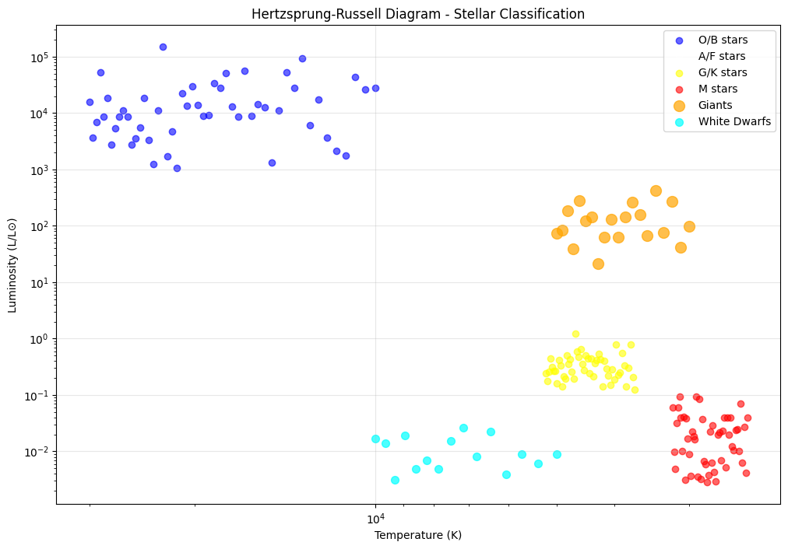

Stellar Evolution: A Comprehensive Study
Course: Physics Retake Exam
Student Name: [Your Name]
Student ID: [Your Student ID]
Date: October 26, 2023
1. Introduction to Stellar Evolution
Stellar evolution is the process by which a star changes over the course of time. Depending on the mass of the star, this lifetime ranges from a few million years for the most massive to trillions of years for the least massive, which is considerably longer than the age of the universe.
2. Star Formation from Interstellar Clouds
2.1. The Birth of Stars
Stars form within relatively dense concentrations of interstellar gas and dust known as molecular clouds. These regions are extremely cold (temperatures of about 10-20K), allowing gas atoms to bond together into molecules.
The formation process involves: - Gravitational collapse of dense regions within molecular clouds - Fragmentation into smaller clumps - Formation of protostars through accretion
2.2. Key Stages of Star Formation
- Molecular Cloud Collapse
The free-fall time for gravitational collapse is given by:
\[
t_{ff} = \sqrt{\frac{3\pi}{32G\rho}}
\]
Where:
- \(t_{ff}\) is the free-fall time
- \(G\) is the gravitational constant (\(6.674 \times 10^{-11} \, \text{m}^3\text{kg}^{-1}\text{s}^{-2}\))
- \(\rho\) is the density of the cloud
- Protostar Formation
- Core contraction and heating
- Onset of hydrostatic equilibrium:
\( \frac{dP}{dr} = -\frac{GM(r)\rho}{r^2} \)
3. Thermonuclear Processes in Stellar Cores
3.1. Types of Thermonuclear Reactions
Main sequence stars primarily use two processes:
- Proton-Proton Chain (dominant in stars < 1.5 M⊙)
- CNO Cycle (dominant in stars > 1.5 M⊙)
3.2. Proton-Proton Chain
The proton-proton chain is the dominant energy source in stars like our Sun:
\[
4p \rightarrow ^4He + 2e^+ + 2\nu_e + 2\gamma
\]
Three main branches:
- ppI chain: \(p + p \rightarrow d + e^+ + \nu_e\)
- ppII chain: involves helium-3 and helium-4
- ppIII chain: produces helium-4 with different intermediate steps
3.3. CNO Cycle (Massive Stars)
For stars more massive than about 1.3 solar masses, the CNO cycle dominates:
\[
^{12}C + p \rightarrow ^{13}N + \gamma \rightarrow ^{13}C + e^+ + \nu_e
\]
\[
^{13}C + p \rightarrow ^{14}N + \gamma
\]
\[
^{14}N + p \rightarrow ^{15}O + \gamma \rightarrow ^{15}N + e^+ + \nu_e
\]
\[
^{15}N + p \rightarrow ^{12}C + ^4He
\]
4. Main Sequence: The Longest Stage
4.1. Characteristics
The main sequence is the longest stage in a star's life, where it burns hydrogen in its core. During this phase:
- Stars maintain hydrostatic equilibrium:
\( \frac{dP}{dr} = -\rho g \) - Energy generation balances gravitational contraction
- Position on HR diagram depends on mass
- Temperature and pressure in core sustain nuclear fusion
4.2. Mass-Luminosity Relation
\[
\frac{L}{L_\odot} \approx \left(\frac{M}{M_\odot}\right)^{3.5}
\]
Where: - \(L\) is luminosity - \(M\) is mass - \(\odot\) denotes solar values
4.3. Main Sequence Lifetime
\[
\tau_{MS} \approx 10^{10} \text{ years} \times \left(\frac{M}{M_\odot}\right)^{-2.5}
\]
5. Evolution of Low-Mass Stars (M < 8M⊙)
5.1. Red Giant Phase
After hydrogen exhaustion in the core: - Shell hydrogen burning begins - Star expands dramatically (100-1000× solar radius) - Surface temperature decreases - Luminosity increases significantly
5.2. Helium Flash and Horizontal Branch
For stars ~0.8-2.0 M⊙: - Degenerate helium core ignites explosively - Star settles on horizontal branch - Helium burning in core, hydrogen burning in shell
5.3. Planetary Nebula and White Dwarf Formation
Final stages: - Thermal pulses and mass loss - Planetary nebula ejection - White dwarf remnant
White dwarf mass-radius relation:
\[
R \propto M^{-1/3}
\]
6. Evolution of High-Mass Stars (M > 8M⊙)
6.1. Supergiant Phase
Massive stars evolve rapidly through multiple burning stages:
| Burning Stage | Duration | Core Temperature | Main Products |
|---|---|---|---|
| Hydrogen | ~10⁷ years | 15×10⁶ K | He |
| Helium | ~10⁶ years | 100×10⁶ K | C, O |
| Carbon | ~10³ years | 600×10⁶ K | Ne, Na, Mg |
| Neon | ~1 year | 1.2×10⁹ K | O, Mg |
| Oxygen | ~months | 1.5×10⁹ K | Si, S |
| Silicon | ~days | 2.7×10⁹ K | Fe |
6.2. Supernova Explosions
Core collapse supernova mechanism: - Iron core grows to Chandrasekhar limit (~1.4 M⊙) - Electron degeneracy pressure fails - Core collapses at ~25% speed of light - Shock wave propagates outward
Energy released:
\[
E_{SN} \approx 10^{46} \text{ J} \approx 10^{53} \text{ erg}
\]
7. Importance of Supernovae for Element Distribution
7.1. Nucleosynthesis Processes
Two main processes in supernovae:
- Explosive nucleosynthesis: Elements up to iron formed through fusion
- r-process (rapid neutron capture): Heavy elements beyond iron formed by neutron capture
7.2. Cosmic Abundance Patterns
Supernovae are primary sources for: - Alpha elements: Oxygen, magnesium, silicon, sulfur, calcium - Iron peak elements: Iron, nickel, cobalt - Heavy elements: Gold, uranium, platinum via r-process
8. Types of Stellar Remnants
8.1. White Dwarfs
Properties: - Mass: 0.6-1.4 M⊙ - Radius: ~Earth size (∼6,400 km) - Density: ~10⁶ g/cm³ - Supported by electron degeneracy pressure
Chandrasekhar limit:
\[
M_{Ch} \approx 1.4 M_\odot
\]
8.2. Neutron Stars
Properties: - Mass: 1.4-3 M⊙ - Radius: ~10 km - Density: ~10¹⁴ g/cm³ (nuclear density) - Supported by neutron degeneracy pressure - Rapid rotation (millisecond periods) - Strong magnetic fields (10⁸-10¹⁵ Gauss)
8.3. Black Holes
Form when remnant mass exceeds Tolman-Oppenheimer-Volkoff limit (~3 M⊙)
Schwarzschild radius:
\[
R_s = \frac{2GM}{c^2}
\]
Where: - \(G\) is gravitational constant - \(M\) is mass - \(c\) is speed of light
9. Hertzsprung-Russell Diagram for Stellar Classification
9.1. HR Diagram Components
